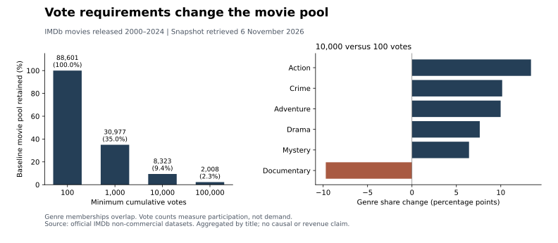

Documentary: 12.5% → 2.8%
Documentary representation falls when the vote floor rises from 100 to 10,000.
SQL / SQLite / Python / Sensitivity Analysis
A minimum-vote rule can make a rating-ranked shortlist look better supported while substantially narrowing the catalogue it represents. I analyzed 88,601 movies to quantify that trade-off and make ranking criteria easier to review.
A catalogue analyst needs a shortlist with enough audience participation to support review, but a high vote threshold may remove less widely rated titles before ranking begins. I asked: How does requiring more votes change the coverage and genre mix of a rating-ranked movie shortlist?
I compared four vote floors using a common release window and consistent eligibility rules. The analysis measures the candidate pool, genre representation and top-50 turnover so a reviewer can assess the consequences of a selection rule before adopting it.
| Minimum votes | Eligible movies | Baseline retained | Mean title rating | Baseline top-50 retained |
|---|---|---|---|---|
| 100 | 88,601 | 100.0% | 5.789 | 50 / 50 |
| 1,000 | 30,977 | 35.0% | 6.101 | 3 / 50 |
| 10,000 | 8,323 | 9.4% | 6.449 | 0 / 50 |
| 100,000 | 2,008 | 2.3% | 6.849 | 0 / 50 |
The baseline is the 88,601 movies with at least 100 votes. Raising the requirement to 10,000 votes excludes 90.6% of that pool and replaces all 50 baseline shortlist titles. Each shortlist ranks titles by rating descending, then votes descending, then title ID ascending.

Documentary representation falls when the vote floor rises from 100 to 10,000.
The same rule increases Action’s share of eligible titles, showing a substantial change in catalogue composition.
The mean-rating difference persists with release-year weights fixed to the baseline distribution. This describes selection into the pool.
The analysis turns an apparently technical filter into a decision about coverage. For a catalogue or discovery review, I recommend displaying eligible-title counts and genre mix alongside each ranked shortlist, rather than assessing the list by its average rating alone.
These findings support a transparent selection policy. Ratings measure recorded audience evaluations and votes measure cumulative participation; neither establishes commercial demand or improved film quality.
The results above come from official IMDb data, with source run date 5 November 2026 and retrieval date 6 November. The repository records SHA-256 fingerprints for both input files. Because IMDb refreshes them daily, a new download can produce different counts; the fingerprints identify the inputs behind this published snapshot.
Automated checks cover aggregation, genre membership, denominators, ranking ties, missing-year standardization and importer behavior. Small fictional fixtures test software behavior separately from the official-data research results. The README provides installation and local reproduction commands.
Inspect the result table · Genre aggregates · Source fingerprints
Source fields and access terms: IMDb non-commercial datasets.